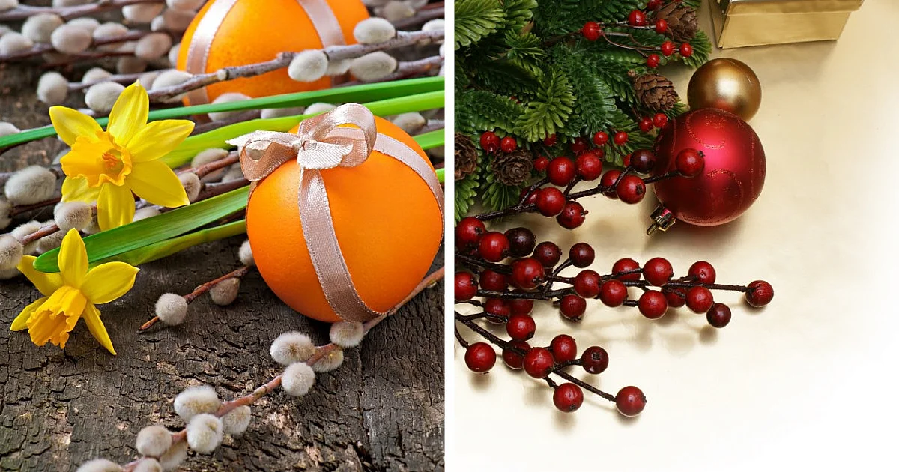

Wprowadzenie
Polska jest krajem bogatym w tradycje i zwyczaje świąteczne. Od wieków święta stanowią ważny element naszej kultury, zarówno pod względem religijnym, jak i społecznym. Każde z obchodzonych świąt wiąże się z wyjątkowymi obrzędami i symboliką, które przekazywane są z pokolenia na pokolenie.
Dwa najważniejsze święta w polskim kalendarzu to Wielkanoc i Boże Narodzenie. Są to okazje, które łączą rodziny oraz pozwalają na chwilę refleksji i odpoczynku. W czasie tych dni ludzie przygotowują specjalne potrawy, uczestniczą w nabożeństwach oraz pielęgnują unikalne tradycje.
